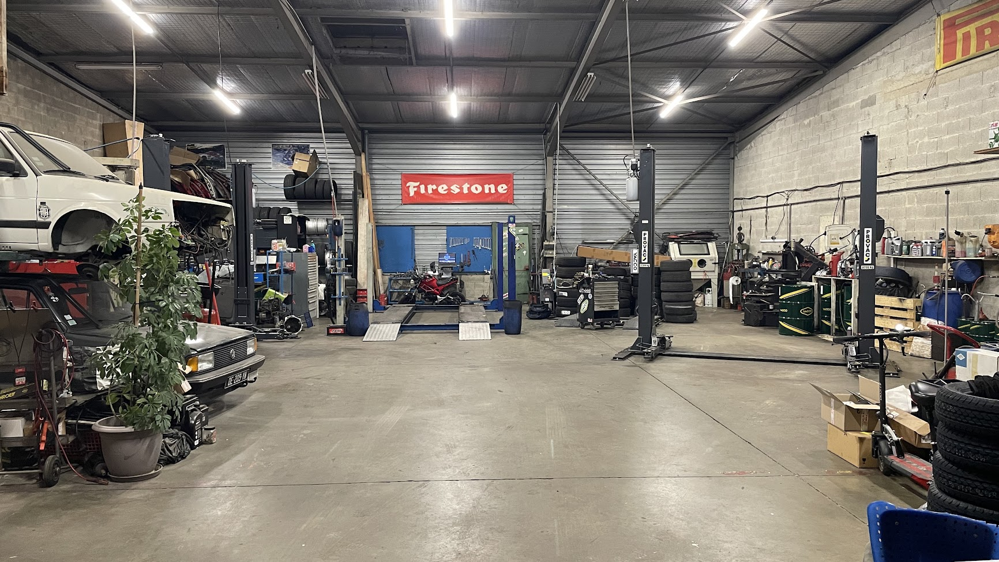

En place depuis 2014, SPORT MECA PNEU est un atelier spécialisé dans la mécanique, les pneus et la performance automobile. Passionnés depuis toujours, nous mettons notre expertise au service de votre véhicule. Travail propre et soigné. Nous prenons le temps de vous expliquer les raisons de votre panne. La confiance est une priorité chez nous.